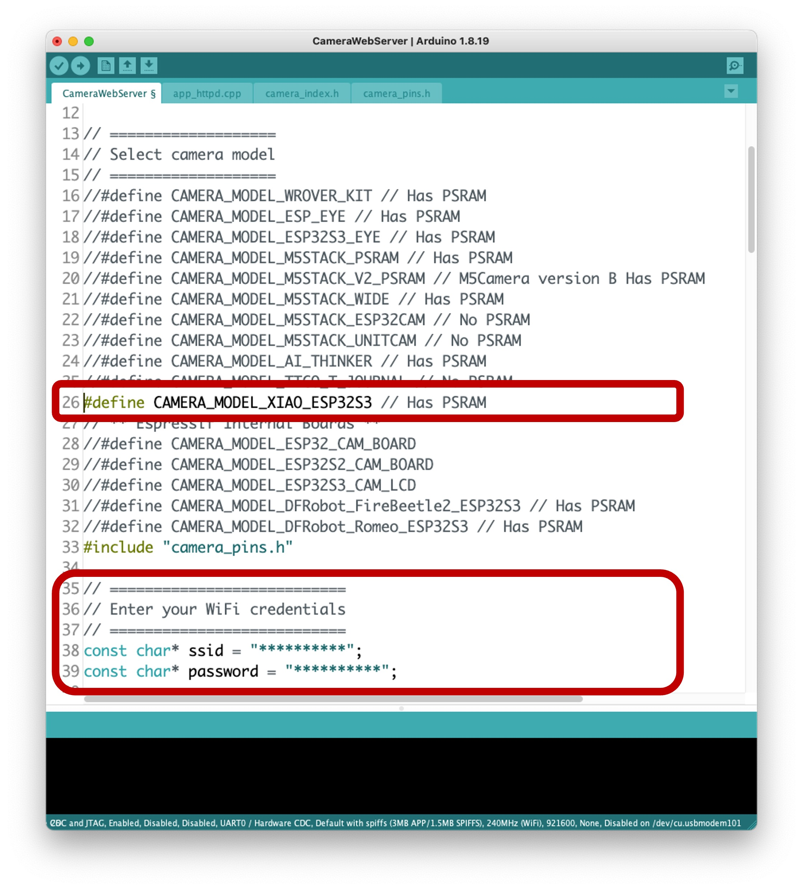
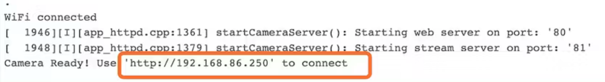
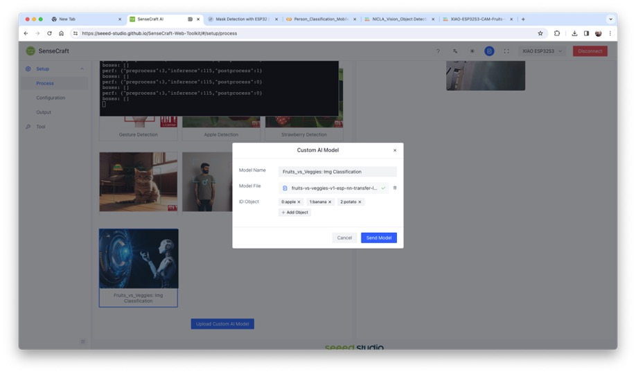
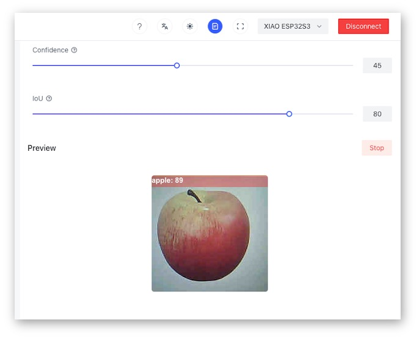
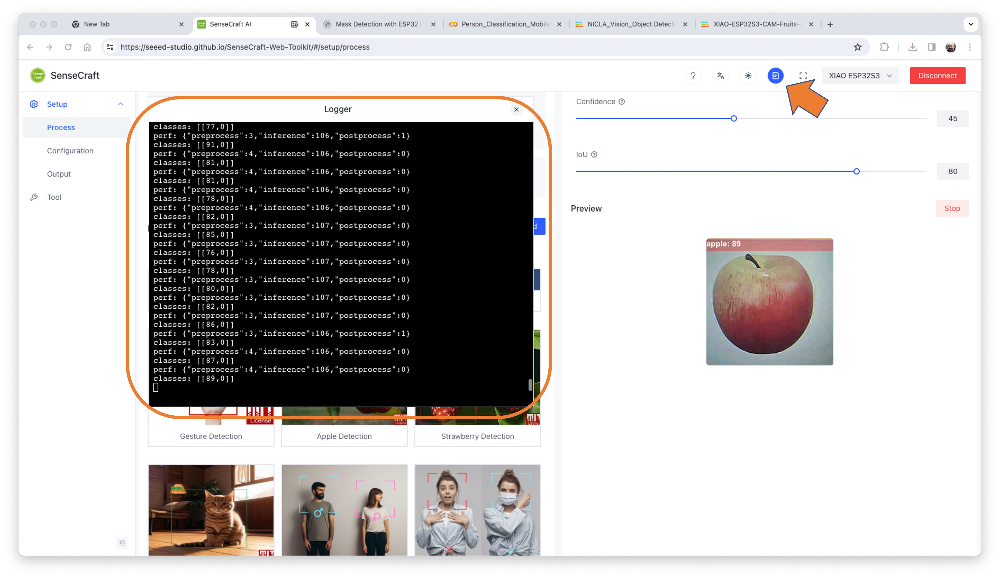
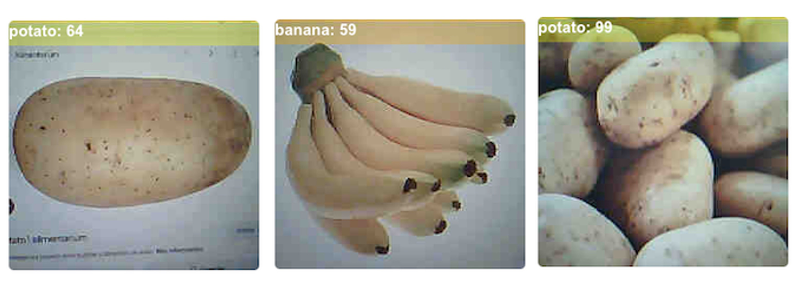

4.4 Image Classification
In this section, let’s explore Computer Vision ML applications on the XIAO ESP32S3 Sense.

4.4.1 Things used in this project
4.4.1.1 Hardware components

4.4.2 Software apps and online services


4.4.2 Introduction
More and more, we are facing an artificial intelligence (AI) revolution where, as stated by Gartner, Edge AI has a very high impact potential, and it is for now!

In the “bull-eye” of emerging technologies, radar is the Edge Computer Vision, and when we talk about Machine Learning (ML) applied to vision, the first thing that comes to mind is Image Classification, a kind of ML “Hello World”!
Seeed Studio released a new affordable development board, the XIAO ESP32S3 Sense, which integrates a camera sensor, digital microphone, and SD card support. Combining embedded ML computing power and photography capability, this development board is a great tool to start with TinyML (intelligent voice and vision AI).

XIAO ESP32S3 Sense Main Features
- Powerful MCU Board: Incorporate the ESP32S3 32-bit, dual-core, Xtensa processor chip operating up to 240 MHz, mounted multiple development ports, Arduino / MicroPython supported
- Advanced Functionality: Detachable OV2640 camera sensor for 1600 * 1200 resolution, compatible with OV5640 camera sensor, integrating an additional digital microphone
- Elaborate Power Design: Lithium battery charge management capability offers four power consumption models, which allows for deep sleep mode with power consumption as low as 14μA
- Great Memory for more Possibilities: Offer 8MB PSRAM and 8MB FLASH, supporting SD card slot for external 32GB FAT memory
- Outstanding RF performance: Support 2.4GHz Wi-Fi and BLE dual wireless communication, support 100m+ remote communication when connected with U.FL antenna
- Thumb-sized Compact Design: 21 x 17.5mm, adopting the classic form factor of XIAO, suitable for space-limited projects like wearable devices

Below is the general board pinout:

For more details, please refer to the Seeed Studio WiKi page:
https://wiki.seeedstudio.com/xiao_esp32s3_getting_started/
4.4.3 Installing the XIAO ESP32S3 Sense on Arduino IDE
On Arduino IDE, navigate to File > Preferences, and fill in the URL:
https://raw.githubusercontent.com/espressif/arduino-esp32/gh-pages/package_esp32_dev_index.json
on the field ==> Additional Boards Manager URLs

Next, open boards manager. Go to Tools > Board > Boards Manager… and enter with esp32. Select and install the most updated and stable package (avoid alpha versions) :

⚠️ Attention
Alpha versions (for example, 3.x-alpha) do not work correctly with the XIAO and Edge Impulse. Use the last stable version (for example, 2.0.11) instead.
On Tools, select the Board (XIAO ESP32S3):

Last but not least, choose the Port where the ESP32S3 is connected.
That is it! The device should be OK. Let’s do some tests.
4.4.4 Testing the board with BLINK
The XIAO ESP32S3 Sense has a built-in LED that is connected to GPIO21. So, you can run the blink sketch as it is (using the LED_BUILTIN Arduino constant) or by changing the Blink sketch accordingly:
#define LED_BUILT_IN 21
void setup() {
pinMode(LED_BUILT_IN, OUTPUT); // Set the pin as output
}
// Remember that the pin work with inverted logic
// LOW to Turn on and HIGH to turn off
void loop() {
digitalWrite(LED_BUILT_IN, LOW); //Turn on
delay (1000); //Wait 1 sec
digitalWrite(LED_BUILT_IN, HIGH); //Turn off
delay (1000); //Wait 1 sec
}Note that the pins work with inverted logic: LOW to Turn on and HIGH to turn off.

4.4.5 Connecting Sense module (Expansion Board)
When purchased, the expansion board is separated from the main board, but installing the expansion board is very simple. You need to align the connector on the expansion board with the B2B connector on the XIAO ESP32S3, press it hard, and when you hear a “click,” the installation is complete.

As commented in the introduction, the expansion board, or the “sense” part of the device, has a 1600x1200 OV2640 camera, an SD card slot, and a digital microphone.
4.4.6 Microphone Test
Let’s start with sound detection. Go to the GitHub project and download the sketch: XIAOEsp2s3_Mic_Test and run it on the Arduino IDE:

When producing sound, you can verify it on the Serial Plotter.
Save recorded sound (.wav audio files) to a microSD card.
Now, the onboard SD Card reader can save .wav audio files. For that, we need to habilitate the XIAO PSRAM.
ESP32-S3 has only a few hundred kilobytes of internal RAM on the MCU chip. It can be insufficient for some purposes so that ESP32-S3 can use up to 16 MB of external PSRAM (Psuedostatic RAM) connected with the SPI flash chip. The external memory is incorporated in the memory map and, with certain restrictions, is usable in the same way as internal data RAM.
For a start, Insert the SD Card on the XIAO as shown in the photo below (the SD Card should be formatted to FAT32).

- Download the sketch Wav_Record, which you can find on GitHub.
- To execute the code (Wav Record), it is necessary to use the PSRAM function of the ESP-32 chip, so turn it on before uploading.: Tools>PSRAM: “OPI PSRAM”>OPI PSRAM

- Run the code
Wav_Record.ino - This program is executed only once after the user turns on the serial monitor, recording for 20 seconds and saving the recording file to a microSD card as “arduino_rec.wav.”
- When the “.” is output every 1 second in the serial monitor, the program execution is finished, and you can play the recorded sound file with the help of a card reader.

The sound quality is excellent!
The explanation of how the code works is beyond the scope of this tutorial, but you can find an excellent description on the wiki page.
4.4.7 Testing the Camera
To test the camera, you should download the folder take_photos_command from GitHub. The folder contains the sketch (.ino) and two .h files with camera details.
- Run the code:
take_photos_command.ino. Open the Serial Monitor and send the commandcaptureto capture and save the image on the SD Card:
Verify that
[Both NL & CR]is selected on Serial Monitor.

Here is an example of a taken photo:

4.4.8 Testing WiFi
One of the differentiators of the XIAO ESP32S3 is its WiFi capability. So, let’s test its radio, scanning the wifi networks around it. You can do it by running one of the code examples on the board.
Go to Arduino IDE Examples and look for WiFI ==> WiFIScan
On the Serial monitor, you should see the wifi networks (SSIDs and RSSIs) in the range of your device. Here is what I got in the lab:

Simple WiFi Server (Turning LED ON/OFF)
Let’s test the device’s capability to behave as a WiFi Server. We will host a simple page on the device that sends commands to turn the XIAO built-in LED ON and OFF.
Like before, go to GitHub to download the folder with the sketch SimpleWiFiServer.
Before running the sketch, you should enter your network credentials:
const char* ssid = "Your credentials here";
const char* password = "Your credentials here";You can monitor how your server is working with the Serial Monitor.

Take the IP address and enter it on your browser:

You will see a page with links that can turn the built-in LED of your XIAO ON and OFF.
Streaming video to Web
Now that you know that you can send commands from the webpage to your device, let’s do the reverse. Let’s take the image captured by the camera and stream it to a webpage:
Download from GitHub the folder that contains the code: XIAO-ESP32S3-Streeming_Video.ino.
Remember that the folder contains the.ino file and a couple of .h files necessary to handle the camera.
Enter your credentials and run the sketch. On the Serial monitor, you can find the page address to enter in your browser:

Open the page on your browser (wait a few seconds to start the streaming). That’s it.

Streamlining what your camera is “seen” can be important when you position it to capture a dataset for an ML project (for example, using the code “take_phots_commands.ino”.
Of course, we can do both things simultaneously: show what the camera sees on the page and send a command to capture and save the image on the SD card. For that, you can use the code Camera_HTTP_Server_STA, which can be downloaded from GitHub.

The program will do the following tasks:
- Set the camera to JPEG output mode.
- Create a web page (for example ==> http://192.168.4.119//). The correct address will be displayed on the Serial Monitor.
- If server.on (“/capture”, HTTP_GET, serverCapture), the program takes a photo and sends it to the Web.
- It is possible to rotate the image on webPage using the button [ROTATE]
- The command [CAPTURE] only will preview the image on the webpage, showing its size on the Serial Monitor
- The
[SAVE]command will save an image on the SD Card and show the image on the browser. - Saved images will follow a sequential naming (image1.jpg, image2.jpg.

This program can be used for an image dataset capture with an Image Classification project.
Inspect the code; it will be easier to understand how the camera works. This code was developed based on the great Rui Santos Tutorial ESP32-CAM Take Photo and Display in Web Server, which I invite all of you to visit.
Using the CameraWebServer
In the Arduino IDE, go to File > Examples > ESP32 > Camera, and select CameraWebServer
You also should comment on all cameras’ models, except the XIAO model pins:
#define CAMERA_MODEL_XIAO_ESP32S3 // Has PSRAM
And do not forget the Tools to enable the PSRAM.
Enter your wifi credentials and upload the code to the device:

If the code is executed correctly, you should see the address on the Serial Monitor:

Copy the address on your browser and wait for the page to be uploaded. Select the camera resolution (for example, QVGA) and select [START STREAM]. Wait for a few seconds/minutes, depending on your connection. You can save an image on your computer download area using the [Save] button.

That’s it! You can save the images directly on your computer to be used on projects.
4.4.9 Fruits versus Veggies - A TinyML Image Classification Project

Now that we have an embedded camera running, it is time to try image classification. For comparative motive, we will replicate the same image classification project developed to be used with an old ESP2-CAM:
ESP32-CAM: TinyML Image Classification - Fruits vs Veggies

The whole idea of our project will be to train a model and proceed with inference on the XIAO ESP32S3 Sense. For training, we should find some data (in fact, tons of data!).
But first of all, we need a goal! What do we want to classify?
With TinyML, a set of techniques associated with machine learning inference on embedded devices, we should limit the classification to three or four categories due to limitations (mainly memory). We will differentiate apples from bananas and potatoes (you can try other categories).
So, let’s find a specific dataset that includes images from those categories. Kaggle is a good start:
https://www.kaggle.com/kritikseth/fruit-and-vegetable-image-recognition
This dataset contains images of the following food items:
- Fruits - banana, apple, pear, grapes, orange, kiwi, watermelon, pomegranate, pineapple, mango.
- Vegetables - cucumber, carrot, capsicum, onion, potato, lemon, tomato, radish, beetroot, cabbage, lettuce, spinach, soybean, cauliflower, bell pepper, chili pepper, turnip, corn, sweetcorn, sweet potato, paprika, jalepeño, ginger, garlic, peas, eggplant.
Each category is split into the train (100 images), test (10 images), and validation (10 images).
- Download the dataset from the Kaggle website to your computer.
Optionally, you can add some fresh photos of bananas, apples, and potatoes from your home kitchen, using, for example, the codes discussed in the last section.
4.4.10 Training the model with Edge Impulse Studio
We will use the Edge Impulse Studio to train our model. As you know, Edge Impulse is a leading development platform for machine learning on edge devices.
Enter your account credentials (or create a free account) at Edge Impulse. Next, create a new project:

Data Acquisition
Next, on the UPLOAD DATA section, upload from your computer the files from chosen categories:

It would be best if you now had your training dataset split into three classes of data:

You can upload extra data for further model testing or split the training data. I will leave it as it is to use the most data possible.
Impulse Design
An impulse takes raw data (in this case, images), extracts features (resize pictures), and then uses a learning block to classify new data.
Classifying images is the most common use of deep learning, but much data should be used to accomplish this task. We have around 90 images for each category. Is this number enough? Not at all! We will need thousands of images to “teach or model” to differentiate an apple from a banana. But, we can solve this issue by re-training a previously trained model with thousands of images. We call this technique “Transfer Learning” (TL).

With TL, we can fine-tune a pre-trained image classification model on our data, performing well even with relatively small image datasets (our case).
So, starting from the raw images, we will resize them (96x96) pixels and feed them to our Transfer Learning block:

Pre-processing (Feature generation)
Besides resizing the images, we can change them to Grayscale or keep the actual RGB color depth. Let’s start selecting Grayscale. Doing that, each one of our data samples will have dimension 9, 216 features (96x96x1). Keeping RGB, this dimension would be three times bigger. Working with Grayscale helps to reduce the amount of final memory needed for inference.

Do not forget to [Save parameters].” This will generate the features to be used in training.
Training (Transfer Learning & Data Augmentation)
In 2007, Google introduced MobileNetV1, a family of general-purpose computer vision neural networks designed with mobile devices in mind to support classification, detection, and more. MobileNets are small, low-latency, low-power models parameterized to meet the resource constraints of various use cases.
Although the base MobileNet architecture is already tiny and has low latency, many times, a specific use case or application may require the model to be smaller and faster. MobileNet introduces a straightforward parameter α (alpha) called width multiplier to construct these smaller, less computationally expensive models. The role of the width multiplier α is to thin a network uniformly at each layer.
Edge Impulse Studio has available MobileNet V1 (96x96 images) and V2 (96x96 and 160x160 images), with several different α values (from 0.05 to 1.0). For example, you will get the highest accuracy with V2, 160x160 images, and α=1.0. Of course, there is a trade-off. The higher the accuracy, the more memory (around 1.3M RAM and 2.6M ROM) will be needed to run the model, implying more latency.
The smaller footprint will be obtained at another extreme with MobileNet V1 and α=0.10 (around 53.2K RAM and 101K ROM).
When we first published this project to be running on an ESP32-CAM, we stayed at the lower side of possibilities, which guaranteed the inference with small latency but not with high accuracy. For this first pass, we will keep this model design (MobileNet V1 and α=0.10).
Another necessary technique to use with deep learning is data augmentation. Data augmentation is a method that can help improve the accuracy of machine learning models, creating additional artificial data. A data augmentation system makes small, random changes to your training data during the training process (such as flipping, cropping, or rotating the images).
Under the rood, here you can see how Edge Impulse implements a data Augmentation policy on your data:
# Implements the data augmentation policy
def augment_image(image, label):
# Flips the image randomly
image = tf.image.random_flip_left_right(image)
# Increase the image size, then randomly crop it down to
# the original dimensions
resize_factor = random.uniform(1, 1.2)
new_height = math.floor(resize_factor * INPUT_SHAPE[0])
new_width = math.floor(resize_factor * INPUT_SHAPE[1])
image = tf.image.resize_with_crop_or_pad(image, new_height, new_width)
image = tf.image.random_crop(image, size=INPUT_SHAPE)
# Vary the brightness of the image
image = tf.image.random_brightness(image, max_delta=0.2)
return image, labelExposure to these variations during training can help prevent your model from taking shortcuts by “memorizing” superficial clues in your training data, meaning it may better reflect the deep underlying patterns in your dataset.
The final layer of our model will have 16 neurons with a 10% of dropout for overfitting prevention. Here is the Training output:

The result could be better. The model reached around 77% accuracy, but the amount of RAM expected to be used during the inference is relatively tiny (about 60 KBytes), which is very good.
Deployment
The trained model will be deployed as a .zip Arduino library:

Open your Arduino IDE, and under Sketch, go to Include Library and add.ZIP Library. Please select the file you download from Edge Impulse Studio, and that’s it!

Under the Examples tab on Arduino IDE, you should find a sketch code under your project name.

Open the Static Buffer example:

You can see that the first line of code is exactly the calling of a library with all the necessary stuff for running inference on your device.
#include <XIAO-ESP32S3-CAM-Fruits-vs-Veggies_inferencing.h>Of course, this is a generic code (a “template”) that only gets one sample of raw data (stored on the variable: features = {} and runs the classifier, doing the inference. The result is shown on the Serial Monitor.
We should get the sample (image) from the camera and pre-process it (resizing to 96x96, converting to grayscale, and flatting it). This will be the input tensor of our model. The output tensor will be a vector with three values (labels), showing the probabilities of each one of the classes.

Returning to your project (Tab Image), copy one of the Raw Data Sample:

9, 216 features will be copied to the clipboard. This is the input tensor (a flattened image of 96x96x1), in this case, bananas. Past this Input tensor on features[] = {0xb2d77b, 0xb5d687, 0xd8e8c0, 0xeaecba, 0xc2cf67, …}

Edge Impulse included the library ESP NN in its SDK, which contains optimized NN (Neural Network) functions for various Espressif chips, including the ESP32S3 (running at Arduino IDE).
When running the inference, you should get the highest score for “banana.”

Great news! Our device handles an inference, discovering that the input image is a banana. Also, note that the inference time was around 317ms, resulting in a maximum of 3 fps if you tried to classify images from a video. It is a better result than the ESP32 CAM (525ms of latency).
Now, we should incorporate the camera and classify images in real time.
Go to the Arduino IDE Examples and download from your project the sketch esp32_camera:

You should change lines 32 to 75, which define the camera model and pins, using the data related to our model. Copy and paste the below lines, replacing the lines 32-75:
#define PWDN_GPIO_NUM -1
#define RESET_GPIO_NUM -1
#define XCLK_GPIO_NUM 10
#define SIOD_GPIO_NUM 40
#define SIOC_GPIO_NUM 39
#define Y9_GPIO_NUM 48
#define Y8_GPIO_NUM 11
#define Y7_GPIO_NUM 12
#define Y6_GPIO_NUM 14
#define Y5_GPIO_NUM 16
#define Y4_GPIO_NUM 18
#define Y3_GPIO_NUM 17
#define Y2_GPIO_NUM 15
#define VSYNC_GPIO_NUM 38
#define HREF_GPIO_NUM 47
#define PCLK_GPIO_NUM 13Here you can see the resulting code:

The modified sketch can be downloaded from GitHub: xiao_esp32s3_camera.
Note that you can optionally keep the pins as a .h file as we did in previous sections.
Upload the code to your XIAO ESP32S3 Sense, and you should be OK to start classifying your fruits and vegetables! You can check the result on Serial Monitor.
4.4.11 Testing the Model (Inference)

Getting a photo with the camera, the classification result will appear on the Serial Monitor:

Other tests:

4.4.12 Testing with a Bigger Model
Now, let’s go to the other side of the model size. Let’s select a MobilinetV2 96x96 0.35, having as input RGB images.

Even with a bigger model, the accuracy could be better, and the amount of memory necessary to run the model increases five times, with latency increasing seven times.
Note that the performance here is estimated with a smaller device, the ESP-EYE. The actual inference with the ESP32S3 should be better.
To improve our model, we will need to train more images.
Even though our model did not improve accuracy, let’s test whether the XIAO can handle such a bigger model. We will do a simple inference test with the Static Buffer sketch.
Let’s redeploy the model. If the EON Compiler is enabled when you generate the library, the total memory needed for inference should be reduced, but it does not influence accuracy.

Doing an inference with MobilinetV2 96x96 0.35, having as input RGB images, the latency was of 219ms, what it is great for such bigger model.

For test, I trained the model again, using the smallest version of MobileNet V2, with an alpha of 0.05. Interesting that the result in accuraccy was higher.

Note that the estimated latency for an Arduino Portenta (ou Nicla), running with a clock of 480MHz is 45ms.
Deploying the model, I got an inference of only 135ms, remembering that the XIAO run with half of the clock used by the Portenta/Nicla (240MHz):

4.4.13 Runing inference on the SenseCraft-Web-Toolkit
One significant limitation of viewing inference on Arduino IDE is that we can not see what the camera focuses on. A good alternative is the SenseCraft-Web-Toolkit, a visual model deployment tool provided by SSCMA(Seeed SenseCraft Model Assistant). This tool allows you to deploy models to various platforms easily through simple operations. The tool provides a user-friendly interface and does not require any coding.
Follow the following steps to start the SenseCraft-Web-Toolkit:
- Open the SenseCraft-Web-Toolkit website.
- Connect the XIAO to your computer:
- Having the XIAO connected, select it as below:

- Select the device/Port and press
[Connect]:

You can try several Computer Vision models previously uploaded by Seeed Studio. Try them and have fun!
In our case, we will use the blue button at the bottom of the page: [Upload Custom AI Model].
But first, we will need to download from Edge Impulse Studio our quantized .tflite model.
- Go to your project at Edge Impulse Studio, or clone this one:
- On
Dashboard, download the model (“block output”):Transfer learning mdodel - TensorFlow Lite (int8 quantized)

- On SenseCraft-Web-Toolkit, use the blue button at the bottom of the page:
[Upload Custom AI Model]. A window will pop up. Enter the Model file that you downloaded to your computer from Edge Impulse Studio, choose a Model Name, and enter with labels (ID:Object):

Note that you should use the labels trained on EI Studio, entering them at alphabetic order (in our case: apple, banana, potato).
After a few seconds (or minutes), the model will be uploaded to your device and the camera image will appear in real-time on the Preview Sector:

The Classification result will be at the top of the image. You can also select the Confidence of your inference cursor Confidence.
Clicking on the top button (Device Log), you can open a Serial Monitor to follow the inference, the same that we have done with the Arduino IDE:

On Device Log, you will get Information as:

- Preprocess time (image capture and Crop): 4ms;
- Inference time (model latency): 106ms,
- Postprocess time (display of the image and inclusion of data): 0ms.
- Output tensor (classes), for example: [[89,0]]; where 0 is Apple (and 1is banana and 2 is potato)
Here are other screen shots:

4.4.14 Conclusion
The XIAO ESP32S3 Sense is a very flexible, not expensive, and easy-to-program device. The project proves the potential of TinyML. Memory is not an issue; the device can handle many post-processing tasks, including communication.
On the GitHub repository, you will find the last version of the codes: XIAO-ESP32S3-Sense.